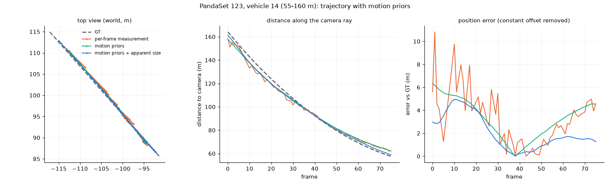

Model
- State per frame: ground position (x, y), heading, speed ≥ 0 (never drives backwards).
- Kinematics (strong): the vehicle moves along its heading, so when it drives straight it does not turn; heading follows the direction of motion.
- Smoothness (physical values, not tuned on GT): yaw rate ~1°/frame, change of yaw rate ~0.2°/frame², small accelerations; it can go straight, slow down, stop or turn, but along smooth curves.
- Observations: the ray through the mask centre (precise across the ray); the distance along it from DA3 + ground contact (noisy, 3%); relative yaw between frame pairs from RoMa v2 matches (noisy, ±5°); optionally the apparent size: the scale change of the vehicle between two frames from the RoMa v2 matches gives the distance ratio (1%).
- Solved jointly for all frames (robust least squares). Errors below remove one constant offset in the GT car frame, because the tracked point is the centre of the visible part of the vehicle, not the box centre.
Result
| Trajectory | Error median (m) | p90 (m) | max (m) | Heading error median / max (°) | Heading change per frame std / max (GT 0.09° / 0.33°) |
|---|---|---|---|---|---|
| Per-frame measurement (mask-centre ray + distance) | 3.07 | 6.13 | 10.82 | – | – |
| Motion priors | 3.46 | 5.35 | 6.35 | 1.01 / 2.95 | 0.09° / 0.38° |
| Motion priors + apparent size | 1.54 | 4.45 | 4.95 | 0.78 / 1.76 | 0.14° / 0.32° |

Open in the 3D viewer with the video (choose "motion priors" in Matches) →